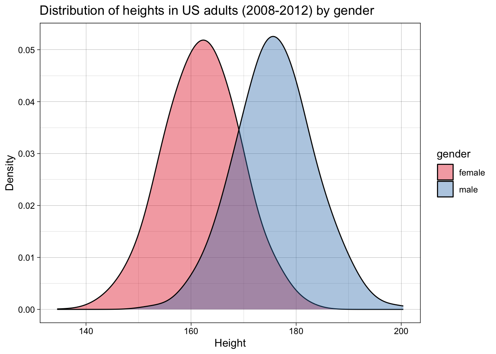
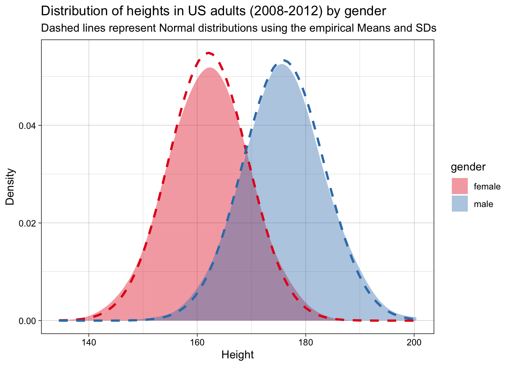
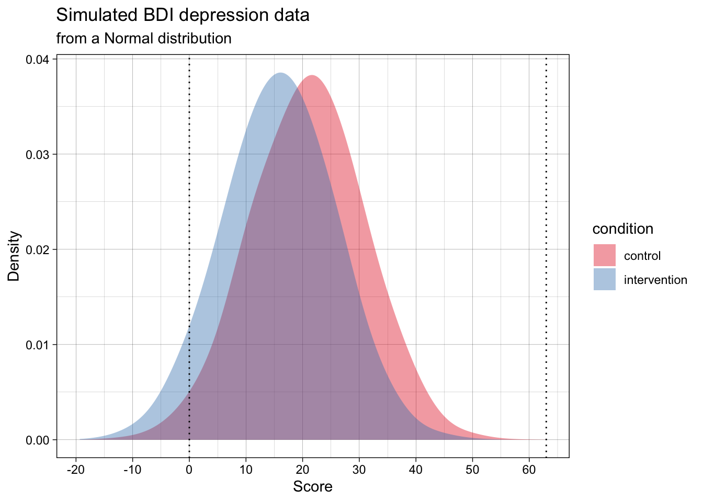
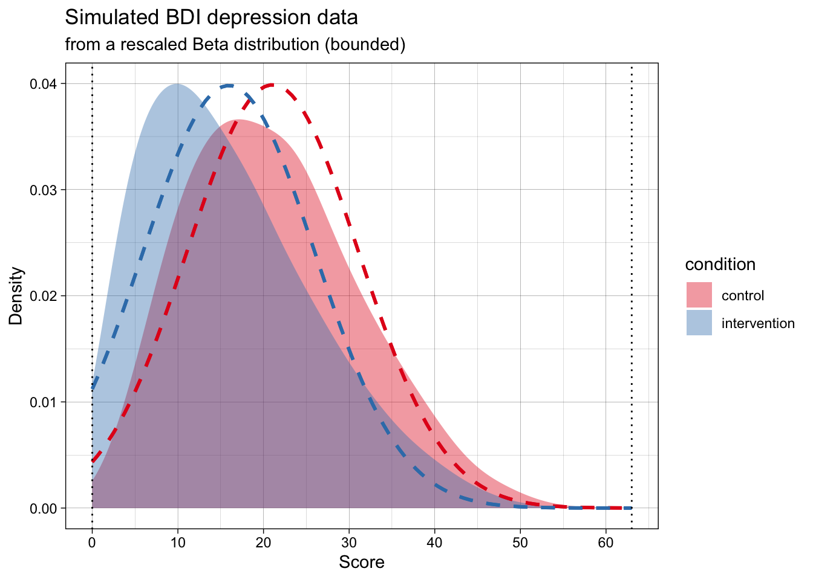

4 Data-generating process functions ✎ Polishing
In the last chapter, you learned how to write functions. In this chapter, you’ll use that skill to write a specific type of function: a data-generating process (DGP) function. This is needed for one of the 5 key components of a Monte Carlo simulation study.
NoteCan you recall the 5 key components of Monte Carlo simulation?
- Design an experiment
- Generate data
- Analyse data
- Do this many times
- Summarise results
4.1 What is a data-generating process?
A data-generating process (DGP) is the theoretical or mathematical mechanism that causally produces observed data. It is the “ground truth”.
- In a real-world study, the DPG is unknown and not directly knowable, but may be estimated from empirical data. For example, the heights of humans in the population appear to follow a normal distribution with a given population mean and standard deviation.
- In a simulation, we have access to the ground truth because we define the data-generating process.
A data-generating process is defined by a probability density function and its specific parameters. Put simply, these define what is “true” in the world that we are simulating. In psychological research, we are most familiar with the normal (or Gaussian) probability density function, but there are many others.
For example, let’s imagine we want to simulate a dataset of the heights of adult women versus men. We can take data from the US Center for Disease Control’s NHANES dataset, in this case for the years 2008-2012, which contains data for about 7000 representative US adults.
Let’s plot the data:
We can calculate the means and standard deviations:
| gender | mean_height | sd_height |
|---|---|---|
| female | 162 | 7 |
| male | 176 | 7 |
This is a very common step in psychological research - so common that it’s easy to overlook something subtle: means and standard deviations are the parameters that define a normal distribution (i.e., and not other distributions).
By calculating means and standard deviations, we are implicitly employing a normal probability density function, and endorsing the idea that these are a meaningful summary of the data and, more importantly, a description of the data generating function.
Let’s check whether that is accurate. For this simple example, we can do this by checking whether a normal distribution with these parameters fits the observed data.

They do. We can therefore say that this probability density function and these parameters represent a good estimate of the DGP.
These values for the means and standard deviations represent the (assumed) population parameters - i.e., the ground truth. If we want to simulate actual datasets - small samples drawn from this population - how would we do this? We would need to write a function that draws such random samples from this population, i.e., following this DGP. This is analogous to recruiting samples from a population in a real study.
Remember that functions have three components:
- They take inputs
- They do stuff to the inputs
- They return outputs
A DGP function’s properties are, then, more specifically:
- Take parameters as inputs
- Draw samples from a DGP based on a given probability density function and the input parameters
- Return a simulated dataset
4.2 Tidy DGP functions
In the next chapter, you’ll write analysis functions that take a dataset and return a result (a p-value, an estimated effect, a confidence interval, etc). When we write these analysis functions, we will have certain expectations about the output of our data-generating functions (e.g., that they will conform to principles of tidy data).
In order to ensure that every data-generating function returns a tidy dataset with predictable column names, it is good practice to make sure that every DGP function returns a tibble as output. Tibbles are like dataframes, but with more consistent behavior that is useful for analysis. For example, if we use select() and select a single column from a dataframe, this is automatically treated by R as a vector, which might break some of our analysis functions down the line (which expect tibbles). select()ing one column from a tibble, by contrast, still returns a tibble object.
Importantly, the outputs of our DGP functions should usually return Tidy Data:
- one row per observation
- relevant grouping variables
- one column per variable you’ll analyse
4.3 Building our first data-generation function: two groups sampled from normal distributions
A simple example that is useful to many simulations of psychological data - and the example that we’re going to use frequently in the next several chapters - is the simulation of two groups drawn from normal distributions with known means and standard deviations. In the previous example, these referred to heights for men and women, but in many of the following examples they will instead represent the intervention vs. control group of a randomised controlled trial (e.g., psychotherapy for depression).
Let’s think about our inputs first. What types of things might vary in such a design? The obvious choice is the means in the control and intervention groups. We could also vary the standard deviation (SD) associated with the means. And we could also vary the number of participants we have in each condition. This means we have as inputs:
n_per_condition: sample size per groupmean_control: mean in the control groupmean_intervention: mean in the intervention groupsd: within-group standard deviation
We will use R’s rnorm() function to generate the data for each group. rnorm() takes three arguments: n (the sample size), mean (the mean value), and sd (the standard deviation). rnorm() will then give us n random draws from a normal distribution with a mean of mean and an SD of sd.
Let’s remember the steps to write a function that we learned in the previous chapter: write the ‘do stuff’ (as pseudocode first if needed) and extract hard-coded values as variables, then wrap it in a function.
4.3.1 Step 1: write the ‘do stuff’
Start by getting the data generation working with hard-coded values. Pseudocode for this could look like:
1. Sample data from a normal distribution using `rnorm()`
2. Sample data for two different groups using defined N, M, SD.
3. Label the groups intervention and control
4. Return a single tibble with the combined dataStart as simply as possible: Get rnorm() working by itself.
rnorm(n = 20,
mean = 28,
sd = 8) [1] 38.967668 23.482415 30.905027 33.062901 31.234147 27.151004 40.092176
[8] 27.242728 44.147390 27.498287 38.438957 46.293163 16.889114 25.769690
[15] 26.933429 33.087603 25.725977 6.748357 8.476265 38.560907Return the results as a tibble rather than a vector. We will return to this point about the importance of tidy inputs and outputs later.
tibble(score = rnorm(n = 20,
mean = 28,
sd = 8))| score |
|---|
| 25.55 |
| 13.75 |
| 26.62 |
| 37.72 |
| 43.16 |
| 24.56 |
| 25.94 |
| 13.89 |
| 31.68 |
| 22.88 |
| 31.64 |
| 33.64 |
| 36.28 |
| 23.13 |
| 32.04 |
| 14.26 |
| 21.72 |
| 21.19 |
| 8.69 |
| 28.29 |
Replace the hard-coded values with variables.
n_per_condition <- 20
mean_intervention <- 28
sd <- 8
tibble(score = rnorm(n = n_per_condition,
mean = mean_intervention,
sd = sd))| score |
|---|
| 29.65 |
| 25.11 |
| 34.07 |
| 22.19 |
| 17.05 |
| 31.46 |
| 21.51 |
| 39.55 |
| 24.55 |
| 33.25 |
| 30.58 |
| 21.73 |
| 40.61 |
| 33.14 |
| 28.72 |
| 30.21 |
| 33.43 |
| 28.72 |
| 4.06 |
| 30.28 |
Create two different tibbles, one for each condition. The appropriate population mean is used in each.
n_per_condition <- 20
mean_intervention <- 28
mean_control <- 32
sd <- 8
data_intervention <-
tibble(score = rnorm(n = n_per_condition,
mean = mean_intervention,
sd = sd))
data_control <-
tibble(score = rnorm(n = n_per_condition,
mean = mean_control,
sd = sd))Add a condition variable to each, so you know which condition each score belongs to.
n_per_condition <- 20
mean_intervention <- 28
mean_control <- 32
sd <- 8
data_intervention <-
tibble(condition = "intervention",
score = rnorm(n = n_per_condition,
mean = mean_intervention,
sd = sd))
data_control <-
tibble(condition = "control",
score = rnorm(n = n_per_condition,
mean = mean_control,
sd = sd))Bind the two tibbles together to make a single dataset.
n_per_condition <- 20
mean_intervention <- 28
mean_control <- 32
sd <- 8
data_intervention <-
tibble(condition = "intervention",
score = rnorm(n = n_per_condition,
mean = mean_intervention,
sd = sd))
data_control <-
tibble(condition = "control",
score = rnorm(n = n_per_condition,
mean = mean_control,
sd = sd))
data_combined <- bind_rows(data_intervention,
data_control)If you View(data_combined), you can see this looks like our desired output. You have written the ‘do stuff’!
Or have we? Let’s do some sanity checks before we go further. Once it’s wrapped as a function, the inner workings of the intermediate steps become somewhat invisible due to variable scoping (see previous chapter). It’s easier to verify it first.
Let’s increase n_per_condition to be large, so that the sample mean and standard deviations are closer to the population values.
n_per_condition <- 10000
mean_intervention <- 28
mean_control <- 32
sd <- 8
data_intervention <-
tibble(condition = "intervention",
score = rnorm(n = n_per_condition,
mean = mean_intervention,
sd = sd))
data_control <-
tibble(condition = "control",
score = rnorm(n = n_per_condition,
mean = mean_control,
sd = sd))
data_output <- bind_rows(data_intervention,
data_control)Now, let’s check that our single simulated dataset’s sample mean and sample standard deviation are a close match for the DGP’s population mean and population standard deviation.
If all is in order, n_per_condition should be 10000 for each condition; the mean of score should be roughly 32 for the control condition and roughly 28 for the intervention condition; and SDs should be roughly 8 for both conditions.
data_combined |>
group_by(condition) |>
summarise(n_per_condition = n(),
mean = mean(score),
sd = sd(score),
.groups = "drop") |>
mutate_if(is.numeric, round_up, digits = 0)| condition | n_per_condition | mean | sd |
|---|---|---|---|
| control | 20 | 33 | 7 |
| intervention | 20 | 26 | 6 |
They match! This might seem trivial at first, but it is a) an important sanity check when writing functions, and b) is the basis of parameter recovery which we will return to later in the book.
4.3.2 Step 2: wrap it into a DGP function
Now let’s turn our working code into a reusable DGP function.
Move the ‘do stuff’ code we just wrote into the function skeleton.
function_name <- function(inputs){
# 'do stuff' goes here
return(output)
}generate_data <- function(n_per_condition,
mean_control,
mean_intervention,
sd) {
data_control <- tibble(
condition = "control",
score = rnorm(n = n_per_condition,
mean = mean_control,
sd = sd)
)
data_intervention <- tibble(
condition = "intervention",
score = rnorm(n = n_per_condition,
mean = mean_intervention,
sd = sd)
)
data_output <- bind_rows(data_control, data_intervention)
return(data_output)
}Now let’s call the generate_data function and see if it works.
generate_data(
n_per_condition = 10,
mean_control = 28,
mean_intervention = 32,
sd = 8
)| condition | score |
|---|---|
| control | 26.20 |
| control | 37.63 |
| control | 41.20 |
| control | 18.57 |
| control | 18.96 |
| control | 30.81 |
| control | 18.38 |
| control | 28.25 |
| control | 41.58 |
| control | 41.30 |
| intervention | 26.17 |
| intervention | 28.05 |
| intervention | 25.00 |
| intervention | 33.65 |
| intervention | 25.65 |
| intervention | 35.26 |
| intervention | 19.91 |
| intervention | 31.61 |
| intervention | 32.79 |
| intervention | 41.42 |
If it didn’t, how can you bug-fix it? Go back to the last chapter for common errors.
Now sanity check it again. As we discussed in the last chapter, there is a difference between code that runs and code that functions as intended.
A simple sanity check here is to change the inputs and check that the outputs change appropriately.
# population parameters
results1 <- generate_data(
n_per_condition = 5000,
mean_control = 76,
mean_intervention = 12,
sd = 33
)
# attempt to recover those parameters in a large sample
results1 |>
group_by(condition) |>
summarise(n_per_condition = n(),
mean = mean(score),
sd = sd(score),
.groups = "drop") |>
mutate_if(is.numeric, round_up, digits = 0)| condition | n_per_condition | mean | sd |
|---|---|---|---|
| control | 5000 | 76 | 33 |
| intervention | 5000 | 12 | 34 |
4.4 How realistic does your simulated data need to be?
We can use the generate data function that we defined above to simulate depression scores on the Beck Depression Inventory (BDI-II) for an RCT on psychotherapy for depression. The BDI has a 0-3 response format and 21 items, so it has a minimum score of 0 and a maximum score of 63. What do you notice about the simulated data?

Many of the simulated data points are below the scale’s minimum of 0, and some might even be above the max of 63. We could instead generate data that adheres to the real-world scale’s bounds. This could be done by sampling from a Beta distribution rather than a normal distribution.
Many of us are not familiar with the Beta distribution. Whereas the normal distribution has the two parameters mean and standard deviation, the Beta distribution has the parameters alpha (\(\alpha\)) and beta (\(\beta\)). You can play with visualizing Beta distributions, or converting means, SDs and scale limits to Beta distributions in this web app we wrote.
This code to implement this DGP is quite a bit more advanced because it doesn’t merely generate data for a Beta distribution, but instead takes a mean, standard deviation, and scale limits (e.g., as might be reported in a psychology article for a self-report scale) and calculates the rescaled Beta distribution of best fit to those parameters. The details of this don’t matter right now; the point to appreciate here is that we can simulate data that is still sampled from a population with this mean and standard deviation, but does not violate the scale’s logical minimum and maximum.
The generated data in the below plot has the exact same population mean and SD per group as the above one, but it adheres to the scale’s bounds.
Now, the simulated data is far more realistic, but will violate the analysis’s assumptions.
At the same time, the most common ways of analysing this data (e.g., testing for differences means using a t-test, calculating the standardized effect size Cohen’s d effect size) treat the data as if they are normally distributed. That is, as if the data actually follows the dashed lines in the below plot.

Does this mismatch between the data’s DGP and the analysis’s assumed DPG matter? And, seperately, should our simulations aim for maximum realism in the data, or just adhere to the analysis’s assumptions?
We will come back to questions like this in later chapters. For now, the point is to make you think about DGPs actually generating data, the fact that analyses assume a given DGP (this is what is meant by statistical assumptions), and the fact that these might not match (i.e., assumptions may be violated). Simulation studies can help us answer when does this matter, and how much?
4.5 Common data-generating functions
In practice, many of the data-generating processes that we want to simulate can be modelled using some useful functions in R. You have already seen one example of this used above: namely, rnorm(). In this section, we’ll go through a small number of additional data-generating functions that you will likely find useful in your future simulations.
4.5.1 Bivariate normal data
Aka pre-post repeated-measures design data.
Psychology data often include repeated measurements on the same person. For example, we might measure a person’s score on a scale before and after they receive an intervention. In principle, we could just simulate these observations using two different rnorm() calls, like this:
generate_data_two_timepoints <- function(n_per_timepoint,
mean_pre,
mean_post,
sd) {
dat <- tibble(
id = 1:n_per_timepoint, # add an id column using the integers 1 to n_per_timepoint
score_pre = rnorm(n_per_timepoint, mean = mean_pre, sd = sd),
score_post = rnorm(n_per_timepoint, mean = mean_post, sd = sd)
)
return(dat)
}But look at the correlation between these observations:
set.seed(44)
two_timepoint_data <- generate_data_two_timepoints(n_per_timepoint = 10000,
mean_pre = 0,
mean_post = 0.5,
sd = 1)
two_timepoint_data %>%
summarise(mean_pre = mean(score_pre),
mean_post = mean(score_post),
cor_pre_post = cor(score_pre, score_post)) %>%
round_up(2)| mean_pre | mean_post | cor_pre_post |
|---|---|---|
| 0.01 | 0.49 | 0 |
The scores at pre and post are uncorrelated. Why? Because the rnorm() calls are separate - effectively assuming the population correlation between the timepoints is zero. In real-world data this is unrealistic; observations from the same participant across time tend to be correlated due to test-retest reliability (e.g., r between .3 and .9), even when scores are influenced by an intervention.
So, how do we simulate correlated variables? rnorm() samples data from a univariate normal distribution, ie a single variable that is normally distributed in the population. We now want to sample from a multivariate normal distribution, specifically a bivariate normal distribution (two variables, pre and post).
Base-R does not have a built in function for this, but the {faux} package’s rnorm_multi() can. We can use rnorm_multi() to simulate an arbitrary number of correlated variables. We’ll start with just two, for pre-post data.
library(faux)
set.seed(42)
data_pre_post <- faux::rnorm_multi(
n = 10000,
vars = 2, # two variables, pre and post
varnames = c("score_pre", "score_post"),
mu = c(0, 0.5), # population mean by variable
sd = 1, # population sd by variable or, if a single value given, SD for all variables
r = 0.3 # correlation matrix or, if a single value given, correlation between all variables
) %>%
as_tibble() # faux returns a data.frame; we convert to tibble for consistencyLet’s check parameter recovery. Since we sampled a large number of participants, the sample estimates should closely match the population parameters.
data_pre_post %>%
summarise(mean_pre = mean(score_pre),
mean_post = mean(score_post),
cor_pre_post = cor(score_pre, score_post)) %>%
round_up(2)| mean_pre | mean_post | cor_pre_post |
|---|---|---|
| -0.01 | 0.49 | 0.3 |
NoteCheck your learning: why does the number of sampled participants have to be high to do parameter recovery here?
When the sample size is low, the estimated results will have a lot of uncertainty (e.g., wide confidence intervals and standard errors). By simulating a large number of participants, the estimates should converge on the population parameters, assuming the analysis assumes a similar DGP to the true DGP.
We might then wrap the DGP in our own custom function to ensure that it returns tidy outputs and has clearly specified inputs. This might not be essential, but is useful for consistency (e.g., always having a data generating function called generate_data that specifies inputs as single variables rather than vectors).
generate_data_pre_post <- function(n,
mean_pre,
mean_post,
sd,
r) {
output <- faux::rnorm_multi(
n = n,
vars = 2,
varnames = c("score_pre", "score_post"),
mu = c(mean_pre, mean_post),
sd = sd,
r = r
) %>%
as_tibble()
return(output)
}We can check parameter recovery again:
set.seed(42)
data_pre_post <- generate_data_pre_post(n = 10000,
mean_pre = 34,
mean_post = 27,
sd = 9,
r = 0.75)
data_pre_post %>%
summarise(mean_pre = mean(score_pre),
mean_post = mean(score_post),
cor_pre_post = cor(score_pre, score_post)) %>%
round_up(2)| mean_pre | mean_post | cor_pre_post |
|---|---|---|
| 33.9 | 26.91 | 0.75 |
4.5.2 Multivariate normal data
Maybe we want to simulate a larger number of correlated variables, each sampled from normal distributions. To do this, we could increase the number of variables we ask for.
This time, instead of specifying a single correlation value, we specify an entire correlation matrix that represents the population correlations between the variables. Because we didn’t supply means and SDs, it will use the defaults for each (0 and 1, respectively).
set.seed(42)
data_multivariate <- rnorm_multi(
n = 10000,
vars = 3,
varnames = c("X1", "X2", "X3"),
r = c( 1.0, 0.2, -0.5,
0.2, 1.0, 0.5,
-0.5, 0.5, 1.0)
)
TipCommon correlation matrix errors
Note that: - The correlation matrix must be symmetrical; its top and bottom triangle must be mirror images of one another - The diagonal values must be 1
Not every set of correlations is mathematically possible. If rnorm_multi() tells you the correlation matrix is “not positive definite”, it usually means your correlations are too extreme or inconsistent with each other. A simple fix is to reduce the magnitude of some of the correlations (move them closer to 0), especially any negative ones. See the appendix on the Crowded Room problem in correlations.
We can check parameter recovery again:
cor(data_multivariate) %>%
round_up(2) X1 X2 X3
X1 1.0 0.2 -0.5
X2 0.2 1.0 0.5
X3 -0.5 0.5 1.04.5.3 Binary outcomes
Binary outcomes refer to cases where there are only two possible answers, 0 or 1. Some examples include heads/tails, correct/incorrect, or survived/died. These are represented by the Bernoulli distribution.
The Binomial distribution is used to model the number of these successes across one or more trials.
R uses the rbinom() function to sample from these distributions, either to get a sequence of individual outcomes (where size = 1, i.e., from the Bernoulli distribution) or the total count of successes (where size > 1, i.e., the Binomial distribution).
Let’s look at how to use rbinom(). It takes three arguments: n, size, and prob.
nrefers to the number of random draws (the number of values you want the function to return).sizerefers to the number of trials per draw (e.g., if you flip a coin 10 times and count the heads, size = 10).probrefers to the “probability of success” (e.g., in coin-flips both outcomes are equally likely, so the probability of “success” (defined either as getting heads or getting tails) is 0.5)
Let’s take a simple example: we’ll simulate 10 coin flips, assuming a probability of heads (1) of 0.5 for each coin flip.
set.seed(42)
rbinom(n = 10, size = 1, prob = 0.5) [1] 1 1 0 1 1 1 1 0 1 1
NoteCheck your learning: does the above code sample from a Bernoulli or Binomial distribution? Why?
It samples from a Bernoulli distribution.
Even though we use the rbinom() function, setting size = 1 restricts each individual draw to a single trial with only two possible outcomes (0 or 1). In probability theory, a Binomial distribution with only one trial (\(n=1\)) is defined as a Bernoulli distribution.
Let’s expand this into our two-group example from before, which we might use to simulate an RCT on psychotherapy for alcoholism. In this case, a 1 represents an ‘event’, in this case the participant relapsing, whereas a 0 represents abstinence from alcohol.
Previously, we used rnorm() to simulate values for a continuous outcome; now we can simulate binary values (e.g., getting a test question correct, scored as 1, or incorrect, scored as 0) with differences in the probability of correct responses between the two groups.
generate_data_two_group_binary <- function(n_per_condition,
prob_control,
prob_intervention) {
data_control <- tibble(
id = 1:n_per_condition,
condition = "control",
score = rbinom(n_per_condition, size = 1, prob = prob_control)
)
data_intervention <- tibble(
id = (n_per_condition + 1):(2 * n_per_condition),
condition = "intervention",
score = rbinom(n_per_condition, size = 1, prob = prob_intervention)
)
dat <- bind_rows(data_control, data_intervention) |>
as_tibble()
return(dat)
}We can check parameter recovery again:
set.seed(42)
data_binary <- generate_data_two_group_binary(
n_per_condition = 10000,
prob_control = 0.40,
prob_intervention = 0.32
)
data_binary |>
group_by(condition) |>
summarise(probability_of_event = mean(score), .groups = "drop")| condition | probability_of_event |
|---|---|
| control | 0.40 |
| intervention | 0.32 |
4.6 A checklist for DGP functions
When you write your own generate_data() functions, aim for these defaults:
- Put all “design choices” in the arguments (sample sizes, effect sizes, standard deviations, etc.).
- Return one dataset per function call.
- Avoid side effects (don’t call
set.seed()inside the function; don’t write files, don’t make plots). - Use clear, consistent column names (which helps both for reading code and for running analysis functions later).
TipPractice writing DGP functions
Ready to practice? Download and complete the exercises for this chapter.
4.7 TODO
- improve tidy section
- add the “is this data normal?” exercise to this lesson or as a recap; remind people about the difference between sample and population, and that simulated data gives you access to the ground truth.
- standardize use of set.seed above
- add note on Concept of DGP: If you sample the entire population, you still need inferential stats to understand the DGP. Eg if you study astronauts, and there are only 12 of them, and you recruit all of them, you don’t automatically know the DGP, which is an abstraction, involves error, etc
- Other distributions to add?
- Skew normal data
- Uniform data
- Likert data? (?other than truffle)
- mixed cor and factor data
- Item level data? (lavaan)